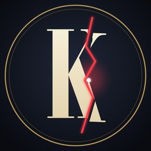

Kırılma NoktasıKırılma Noktası
History documentaries about the turning points that changed the world: economic crashes, disasters and discoveries.
About our TikTok integration
“AI Company” is a private desktop tool used only by the Kırılma Noktası team. It takes the short vertical clips we cut from our own YouTube documentaries and, after we review and approve each one, publishes it to our own TikTok account through the TikTok Content Posting API. The tool is not offered to other users.